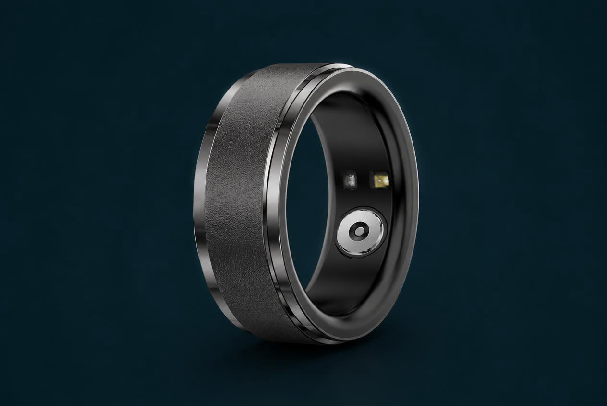
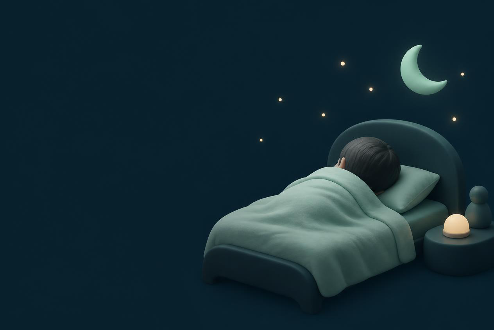
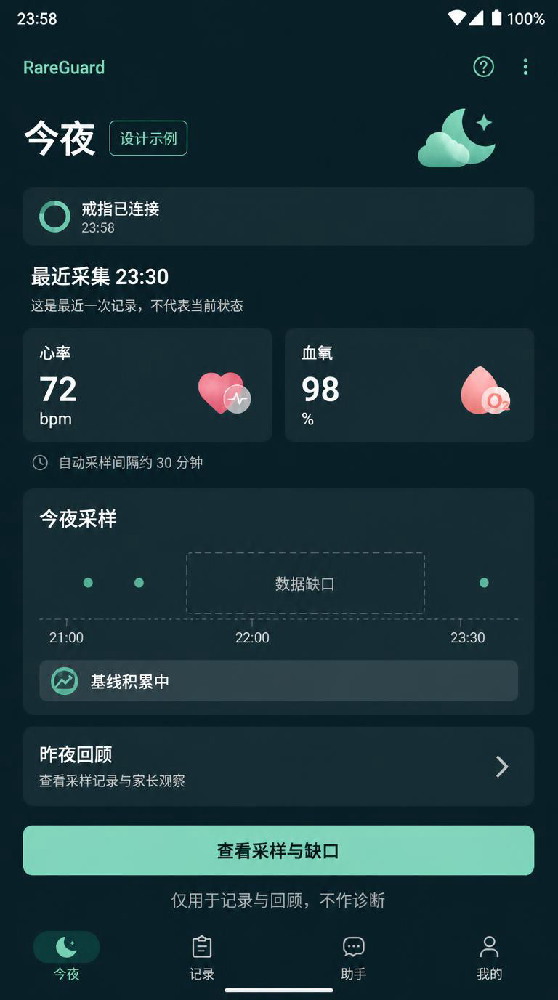
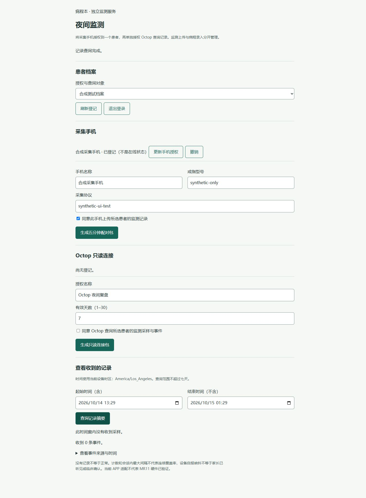
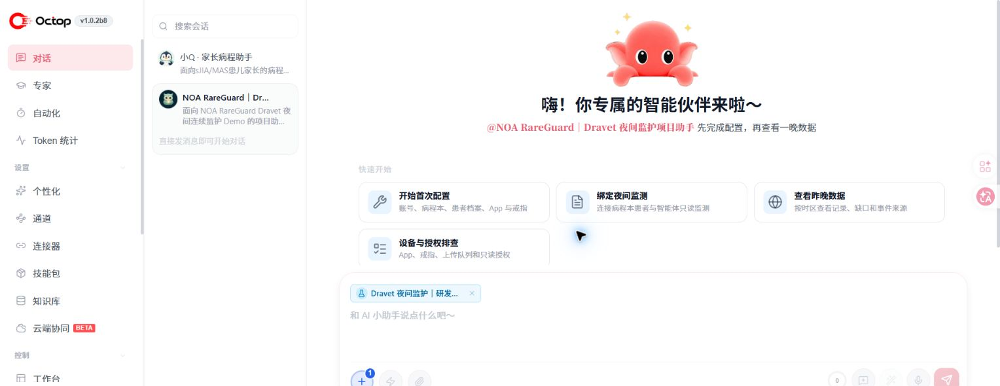
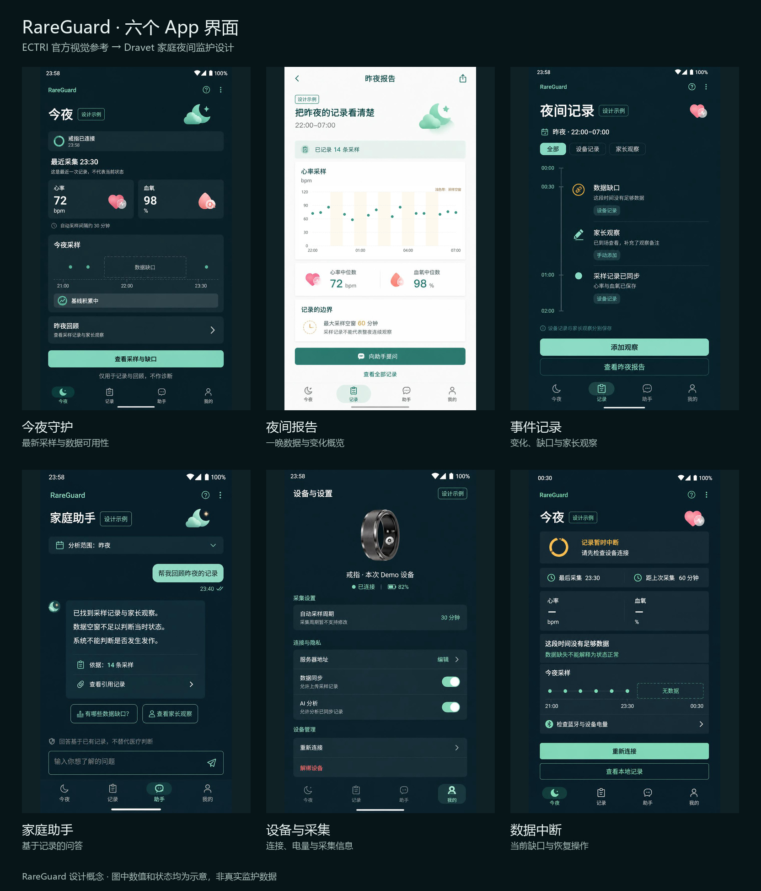
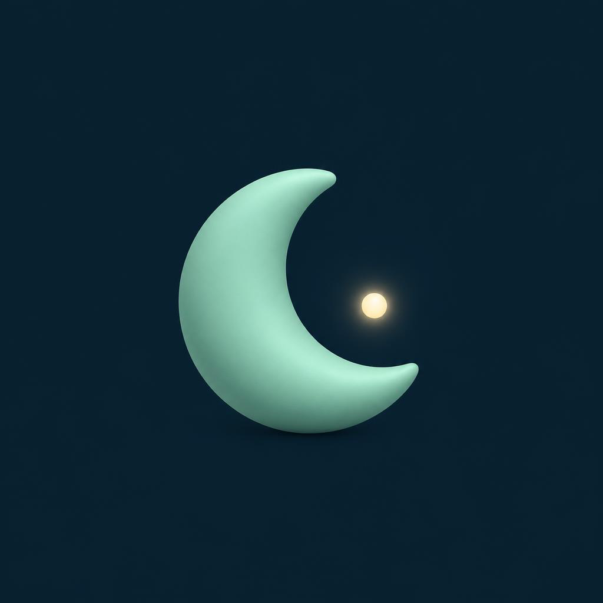

戒指
贴身采集设备可提供的生理信号与设备状态。
Dravet 夜间连续监护
从戒指采集，到病程云端，再到 Octop 项目智能体

患者出题，工程师答题。
家长需要的是：什么时候该起身，起身之后该看什么。
RareGuard 把“昨晚发生了什么”变成一条可以回看的记录：有时间、有来源、有质量，也保留缺口。

目标不是替家长下结论，
而是让下一步行动有依据。
辅助监护 · 描述性记录 · 不做发作诊断
每一层负责一个清楚的问题。数据先有归属，解释才有边界。
贴身采集设备可提供的生理信号与设备状态。

本地连接、队列和上传状态，记录数据缺口。

患者、授权、采集记录、事件和夜间工作台的承载层。

只读取获授权记录，生成时间轴与验收复盘。
RareGuard APP 是家庭端入口。它连接戒指，保留离线队列，并把上传状态交给病程云端服务管理。

夜间记录显示“有数据”“缺数据”“家长观察”三种不同来源，不把空窗画成连续正常。
服务端接住手机上传的监测记录，再单独管理 Octop 的只读查询授权。设备归属、患者档案、时间窗和事件来源由病程服务统一核对。
患者与时间窗、采集手机、授权状态、查询记录和缺口都在同一个页面内。这样智能体读取的每一条记录，都能回到原始上下文。
页面中的“合成测试档案”保留在展示里，提醒我们：界面验收和真实戒指整夜采集是两件事。
病程本 · 独立监测服务 · 夜间监测 · 合成测试档案
它不是把聊天框换个名字，而是把项目规则、授权范围和夜间复盘入口放到一个可管理的智能体项目里。
每一步都能回到数据来源，权限不会随着对话扩大。
用户在病程本生成 Octop 只读连接包，授权对象和有效期清楚可见。
按患者、时区和时间窗查询已授权的夜间记录。
把心率、血氧、体动、缺口、设备事件和家长观察分栏呈现。
描述相对个人参考范围的变化，说明来源和质量，不输出发作诊断。
戒指提供信号，手机记录接收与上传，病程服务保留上下文，Octop 帮助把证据整理成可读的时间轴。
辅助监护 · 不构成医疗诊断记录信号、设备时间和质量。一次测量不等于连续监测。
记录收到时间、上传队列和连接缺口，不把手机收到时间当成设备测量时间。
病程服务按患者、时间窗、来源和事件保存记录。
Octop 解释“相对平时哪里变了”，把下一步留给照护者和既有方案。
缺数据必须显示为缺数据，不能被解释成“没有事件”。
工程闭环是今天可以展示的能力；真实设备闭环要用真机和真实记录继续回答。
戒指采集，手机承接，病程云端保存，
Octop 帮助复盘。
